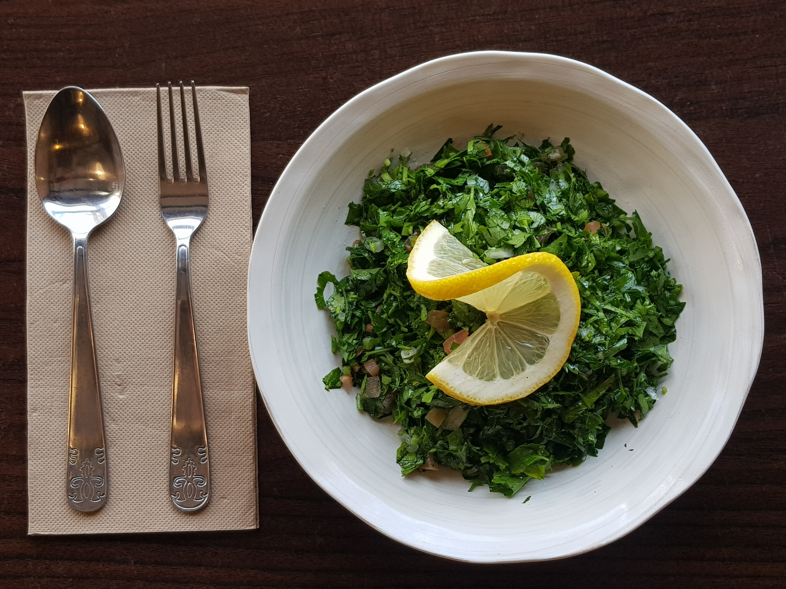

<!DOCTYPE html>
<html lang="en">
<head>
    <meta charset="UTF-8">
    <meta http-equiv="X-UA-Compatible" content="IE=edge">
    <meta name="viewport" content="width=device-width, initial-scale=1.0">
    <title>JV's Kitchen: Tabbouleh</title>
    <link rel="stylesheet" href="styles.css">
</head>
<body>
    
</body>
</html>
<h1>Tabbouleh</h1>

    <p>Photo Credit: 
        <a href="https://unsplash.com/de/@hamzazaidi?utm_source=unsplash&utm_medium=referral&utm_content=creditCopyText">Hamza Zaidi</a> on <a href="https://unsplash.com/photos/pyJ_eHgRikw?utm_source=unsplash&utm_medium=referral&utm_content=creditCopyText">Unsplash</a>
    </p>
    <h2>Description</h2>
    <p>Tabbouleh is a wonderful side dish made from parsley, spring onion, tomato, cucumber, and bulghur wheat.<br> 
       Lemon and a hint of olive oil create a tremendous effect of flavor separation.<br>
       The earthy base of parsley combines with the bite of lemon and spring onion,<br> 
       which are contrasted by the nutty, rich aftertaste of bulgur wheat to create this timeless and refreshing salad.
    
    </p>
    <h3>Ingredients</h3>
      <ul>
        <li>1/2 cup fine bulgur wheat</li>
        <li>2 firm Roma tomatoes, finely chopped</li>
        <li>2 bunches trimmed and minced fresh parsley</li>
        <li>7 mint leaves (optional) finely minced</li>
        <li>4 green onions</li>
        <li>Salt, to taste</li>
        <li>Lemon juice, to taste</li>
        <li>3-4 tbsp extra virgin olive oil</li>
      </ul>
      <h4>Steps</h4>
      <ol>
        <li>Wash the fine bulgur wheat and soak in cold water for several minutes. Strain and squeeze by hand until dry. Set aside.</li>
        <li>Finely chop vegetables and herbs. Set a strainer in a large bowl. Set the tomatoes in the strainer. Add several small pinches of salt and stir gently. Allow to sit for 20 minutes.</li>
        <li>Place chopped vegetables other than tomatoes, herbs, green onions, and bulgur in a mixing bowl.</li>
        <li>Add lime juice and olive oil and mix. Taste. Add tomato juice to taste. Add salt and pepper to taste. Add olive oil and mix gently.</li>
        <li>Place into a covered bowl. Refrigerate for up to 1 hour before serving.</li>
        <li>Enjoy! Serve with falafel and pita if you so desire!</li>
      </ol>
      <footer> <a href="index.html">Return to Homepage </footer>